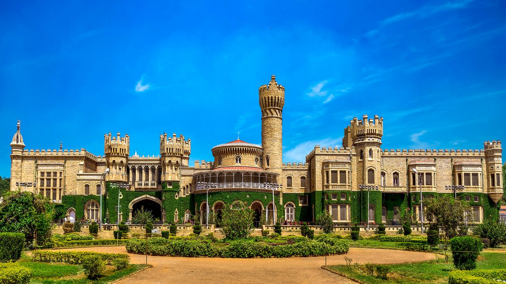
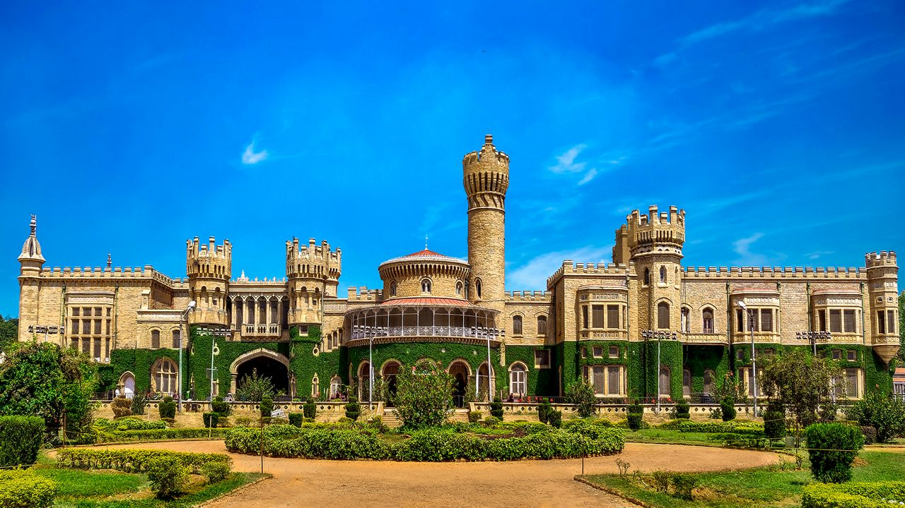

Bangalore (Bengaluru), the capital of Karnataka, is India's premier technology hub and 3rd most populous city, located on the Deccan Plateau. Known as the "Silicon Valley of India," it serves as the nation's largest IT exporter and a major manufacturing center. The city boasts a pleasant climate year-round and is celebrated as the "Garden City of India". Beyond its modern, fast-paced corporate life, Bengaluru is a diverse, cosmopolitan metropolis rich in history, culture, and cuisine. It offers a vibrant lifestyle with numerous parks,, green spaces, and renowned educational institutions. The city is famous for its unique South Indian food scene, featuring local staples like Rava Idli and Benne Masala Dosa.